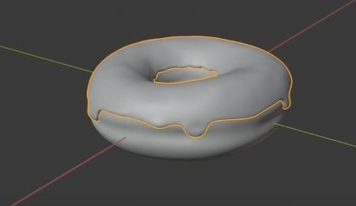

BLENDER
Blender
Blender ist eine Gratissoftware, die sich zur Modellierung, Animation, Bildsynthese und Video- und Bildbearbeitung eignet. Ich habe Blender vor allem für die Modellierung verwendet. Dazu habe ich ein einfaches Tutorial auf YouTube verfolgt und schrittweise die Phasen von Modellierung, Renderung, Komposition bis hin zu einer einfachen Animation hin gelernt. Ganz am Anfang des Projektes habe ich eine simple Ringform langsam mit dem Modellierungstool in einen Donut verwandelt. Danach kamen die Feinschliffe am Modell. Mit den Tools "Soft" und "Smooth Shading" kann man das Modell schnell in noch weitere Polygone unterteilen, sodass der Donut schnell rund aussah.
Danach kopierte ich die obere Hälfte des DOnuts und machte eine Glasur Textur daraus, die ich am Ende über die obere Hälfte des Donut zog. Mithilfe des Modellierung Tools, zog ich Masse in die Länge, um eine bessere Form zu erhalten.

Mithilfe des Render Programm, dass in Blender eingebaut ist, färbte ich den Donut um und überzog das Modell, ähnlich wie ich es beim Charakter Modell gemacht hatte, mit meiner eigenen Donuttextur.
>
In der Sektion "Shading" kann man die Oberflache des Modelles bearbeiten. Hier gab ich dem Donut eine rauere Textur, damit er realistischer aussah. Danach kreierte ich ein "Streusel"-Modell, dass ich mithilfe von verschiedenen Modifiern zufallsweise über den Donut hinweg verteilen konnte. Die Streusel färbte ich ebenfalls mit dem Render-Tool um, und der Donut war schon fertig. Ich bearbeitete das ganze Modell nochmals, bis es mir gefiel. Mit dem Wissen, dass ich mir in Blender angeeignet hatte, konnte ich nun auch die Videospiel-Charaktermodelle bearbeiten und ihnen eigene Texturen geben. In Zukunft möchte ich komplexere Modelle für Videospiele entwickeln und diese selber ins Spiel einfügen und programmieren. Blender ist eine Software, die noch viel mehr kann als nur 3D-modellieren, so möchte ich auch mal versuchen, in Blender zu etwas Komplexeres zu animieren. Ich liebe es, Neues auszuprobieren und habe gerne Herausforderungen, die ich mit dem Animieren in Blender sicher haben werde.